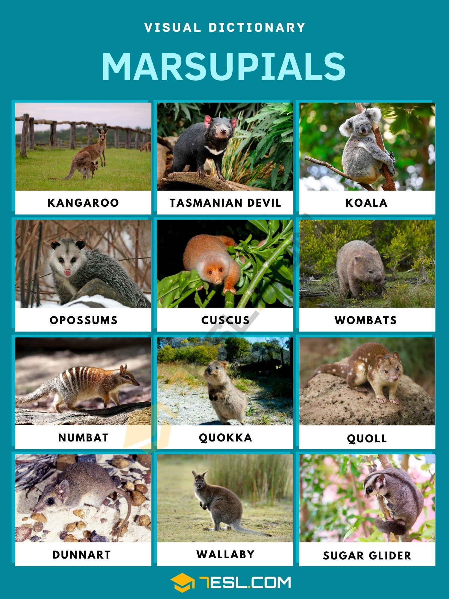

Marsupials
Marsupials are things like kangaroos and koalas
Marsupials are a group of mammals known for giving birth to relatively undeveloped young that continue growing inside a pouch on the mother’s body. Their defining features include this pouch, called a marsupium, and a unique reproductive system in which the newborns, though tiny and fragile, crawl to the pouch immediately after birth to nurse and develop further.
Common examples of marsupials include kangaroos, koalas, and opossums. This way of raising young allows marsupials to thrive in a variety of environments, especially in Australia and nearby regions where most species are found.

This way to main page
back to mammals